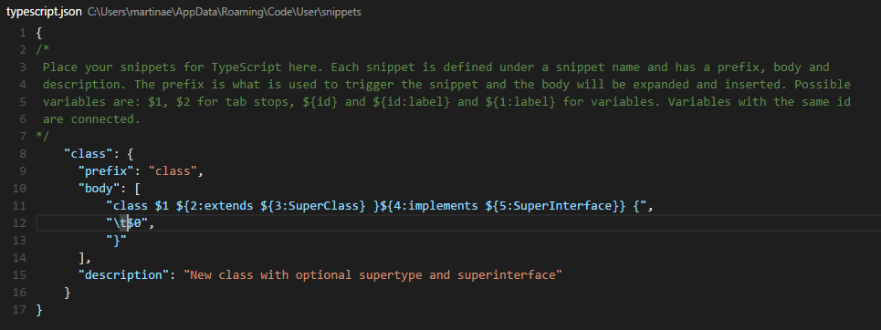
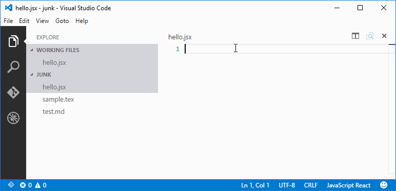

向 VSC 添加代码段(Adding Snippets to Visual Studio Code)
Code snippets are ready-made snippets of code you can quickly insert into your source code. For example, a for code snippet creates an empty for loop.
代码段是一种可以快速插入到源代码中的代码片段。例如，对于代码片段创建一个空的for循环。
Each snippet defines a prefix under which it will appear in IntelliSense via (kb(editor.action.triggerSuggest)) as well as a body inserted when the snippet is selected. The snippet syntax follows the TextMate snippet syntax with the exception of 'regular expression replacements', 'interpolated shell code' and 'transformations', which are not supported.
每个代码段定义时有一个前缀，只要该前缀出现，它就会出现在 IntelliSense via（kb（editor.action.triggerSuggest）） 中，以及在选择代码段时插入的主体。代码段语法遵循 TextMate代码段 语法，但不支持 “正则表达式替换” ， “插入的shell代码”和“转换”。

从扩展市场添加代码段(Add Snippets from the Marketplace)
Many snippets have been uploaded to the VS Code Extension Marketplace by the community. If you find one you want to use, simply install it and restart VS Code and the new snippet will be available.
许多片段已被社区上传到VS Code扩展市场。如果你发现了一个代码段并且想要使用，你只需安装它，并重新启动VS Code，这个代码段就可以用了。

You can also browse the VS Code Marketplace site directly to find available snippets.
您还可以直接浏览VS Code 扩展市场的网站，来查找可用的代码段。
创建自己的代码段(Creating your Own Snippets)
You can define your own snippets for specific languages. Snippets are defined in a JSON format.
您可以为特定语言定义自己的代码段。代码段以JSON格式定义。
The example below is a For Loop snippet for JavaScript.
下面的示例是一个 JavaScript 的 For 循环代码段。
"For Loop": {
"prefix": "for",
"body": [
"for (var ${index} = 0; ${index} < ${array}.length; ${index}++) {",
"\tvar ${element} = ${array}[${index}];",
"\t$0",
"}"
],
"description": "For Loop"
},
In the example above:
在上面的实例中：
For Loopis the snippet nameprefixdefines a prefix used in the IntelliSense drop down. In this casefor.bodyis the snippet content.For Loop是这个代码段的名称。prefix在这种情况下定义了在IntelliSense下拉列表中使用的前缀。body是这个代码段的额内容。
Possible variables are:
可能的变量有：
- $1, $2 for tab stops
- ${id} and ${id:label} and ${1:label} for variables
- Variables with the same id are connected.
descriptionis the description used in the IntelliSense drop down$1, $2 用于制表符。
- ${id} ， ${id:label} 和 ${1:label} 是变量。
- 有相同 id 的变量相互关联。
description是在IntelliSense 下拉列表中的描述。
To open up a snippet file for editing, open User Snippets under File > Preferences and select the language for which the snippets should appear.
打开要编辑的代码段文件，请在 文件>首选项 下打开用户代码段，然后选择 代码段应显示的语言 。
In case your snippet should contain
{or}, it is possible to escape them, in JSON as\\{and\\}如果您的代码片段应包含
{或}，可以转义它们，在JSON中为\\{和\\}。
Once you have added a new snippet, you can try it out right away, no restart needed.
添加新代码段后，您可以立即尝试，无需重新启动。
使用TextMate代码段(Using TextMate Snippets)
You can also add TextMate snippets (.tmSnippets) to your VS Code installation using the yo code extension generator. The generator has an option New Code Snippets which lets you point to a folder containing multiple .tmSnippets files and they will be packaged into a VS Code snippet extension. The generator also supports Sublime snippets (.sublime-snippets).
您还可以使用 yo代码扩展生成器 将 TextMate代码段（.tmSnippets） 添加到VS Code 安装。生成器有一个 选择新代码片段 ，它允许您指向包含多个 .tmSnippets 文件的文件夹，它们将打包到VS Code代码段代码扩展中。生成器还支持 Sublime代码段（.sublime-snippets）。
The final generator output has two files: an extension manifest package.json which has metadata to integrate the snippets into VS Code and a snippets.json file which includes the snippets converted to the VS Code snippet format.
最终的生成器输出有两个文件：扩展清单 package.json，其将会把代码集成到VS Code的元默认数据以及 snippets.json 文件中，其包括被转换为VS Code 代码片段格式的片段。
.
├── snippets // VS Code integration
│ └── snippets.json // The JSON file w/ the snippets
└── package.json // extension's manifest
Copy the generated snippets folder to a new folder under your .vscode/extensions folder and restart VS Code.
将生成的 snippets 文件夹复制到 .vscode/extensions 文件夹下的新文件夹中，然后重新启动VS Code。
在扩展市场中共享您的代码段(Sharing Your Snippets in the Marketplace)
Once you have created your snippets and tested them out, you can share them with the community.
一旦您创建了代码段并对其进行测试，就可以与社区共享。
To do this, you need to create a snippet extension. If you've used the yo code extension generator, your snippet extension is ready to be published.
为此，您需要创建一个代码段扩展。如果您已使用yo code扩展程序生成器，则您的代码段扩展程序已经可以发布。
If you want to share user snippets, you'll need to package your snippet json file along with an extension manifest which has the necessary metadata to integrate the snippets into VS Code.
如果您想要共享你的代码段，则需要打包您的代码段json文件以及具有必要默认数据的扩展清单，以将代码段集成到VS Code中。
Depending on your plaform, your user snippets file is located here:
根据您的操作系统，您的用户代码段文件位于以下几处：
- Windows
%APPDATA%\Code\User\snippets\(language).json - Mac
$HOME/Library/Application Support/Code/User/snippets/(language).json - Linux
$HOME/.config/Code/User/snippets/(language).json
where (language).json depends on the targeted language of the snippets (e.g. markdown.json for Markdown snippets). Create a new folder for your extension and copy your snippet file to a snippets subdirectory.
（language）.json 的位置取决于片段的目标语言（例如Markdown片段的markdown.json）。为扩展程序创建一个新文件夹，并将您的代码段文件复制到 snippets 子目录。
Now add an extension manifest package.json file to the extension folder. The snippet extension manifest follows the structure defined in the Extension Manifest reference and provides a snippets contribution.
现在，将扩展清单 package.json 文件添加到扩展文件夹。代码段扩展清单遵循 “扩展清单” 参考中定义的结构，并提供了代码段贡献。
Below is an example manifest for Markdown snippets:
以下是Markdown片段的示例清单：
{
"name": "DM-Markdown",
"publisher": "mscott",
"description": "Dunder Mifflin Markdown snippets",
"version": "0.1.0",
"engines": { "vscode": "0.10.x" },
"categories": ["Snippets"],
"contributes": {
"snippets": [
{
"language": "markdown",
"path": "./snippets/markdown.json"
}
]
}
}
Note that snippets need to be associated with a language identifier. This can be a language supported directly by VS Code or a language provided by an extension. Make sure the language identifier is correct.
请注意，代码段需要与 语言标识符 相关联。这是被 VS Code 默认支持的语言，或由扩展提供的语言。请确保语言标识符正确。
You then use the vsce publishing tool to publish the snippet extension to the VS Code Extension Marketplace.
然后使用vsce发布工具将代码段扩展名发布到VS Code扩展市场。
Tip: To make it easy for users to find your snippet, include the word "snippet" in the extension description and set the
CategorytoSnippetsin yourpackage.json.提示： 为了方便用户查找您的代码段，请在扩展说明中包含
“snippet”一词，并将package中的Category设置为Snippets。
We also have recommendations on how to make your extension look great on the VS Code Marketplace, see Marketplace Presentation Tips.
我们还有一些建议如何使您的扩展在VS代码市场发展壮大，请参阅市场演示提示。
下一步(Next Steps)
Snippets are just one way to extend VS Code. If you'd like to learn more about VS Code extensibility, try these topics:
代码片段只是扩展VS Code的一种方法。如果您想了解有关VS代码可扩展性的更多信息，请尝试以下信息：
- Colorizers and Bracket Matchers - Learn how to import TextMate colorizers
- Custom themes - Learn how to import existing TextMate themes.
- Extending Visual Studio Code - Learn about other ways to extend VS Code
- Editing Evolved - Learn more about the VS Code editor's capabilities
Common Questions
Q: I created a snippets extension but they aren't showing up in the VS Code editor?
A: Be sure you have correctly specified the language identifier for your snippet (e.g. markdown for Markdown .md files, plaintext for Plain Text .txt files). Also verify that the relative path to the snippets json file is correct.